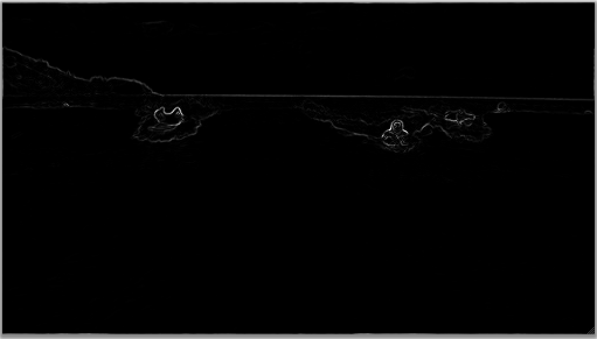
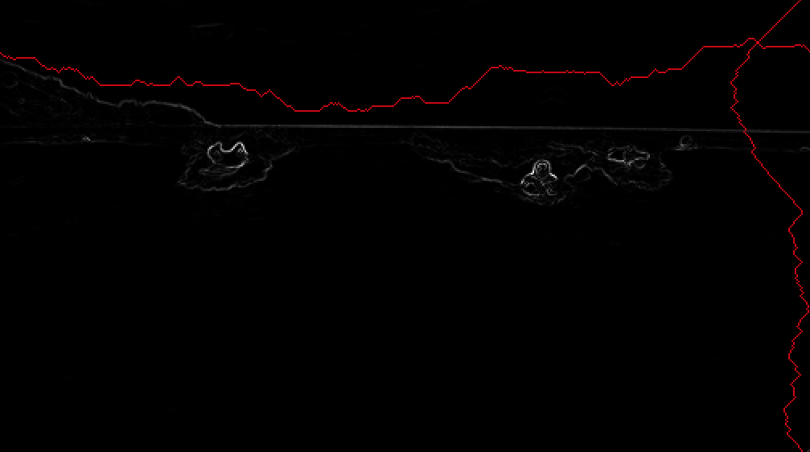

Assignment 87 - Seam Carving Images

Learning Outcomes
Resize images with a shortest path algorithm
Goals
- File I/O
- 2D arrays (Image processing/filtering)
- Alg Design: Dynamic Progamming
- Alg Design: Greedy approach (graph shortest paths)
Original Image

Energy Image

Horizontal and Vertical Seams
You will generate a visualization that looks like the figures above.
Task
Visualize a resized version of a given image while retaining key image objects
and features
Steps
- Read the given image
- Compute the energy at each pixel using central differences in X and Y and summing the squares of the gradients in red, green, blue components
- Identify vertical and horizontal seams by determining a sequence of pixels that minimize the energy sum along the seam.
- Can use a dynamic programming or a shortest path approach to the optimization.
- For dynamic programming, start with the bottom row with the energy values. Then update the rows above forming the optimal energy sums, using the 3 nearest neighbors (left, middle, right). For horizontal seams, start from the right most column.
- For shortest path approach, build a graph with each pixel forming edges to its 3 nearest neighbors (down for vertical, right for horizontal seams). Create a node to connect to all pixels in the top row and another to connect to the pixels in teh bottom row. Run Dijkstra's shortest path algorithm.
- Identify the pixels in the seam by following the smallest pixel in each row (for vertical seam) or column (for horizontal seam), among the 3 nearest neighbors.
- Remove the identified seam pixels
Help
for Java
ColorGrid Class
for C++
ColorGrid Class
For Python
ColorGrid Class